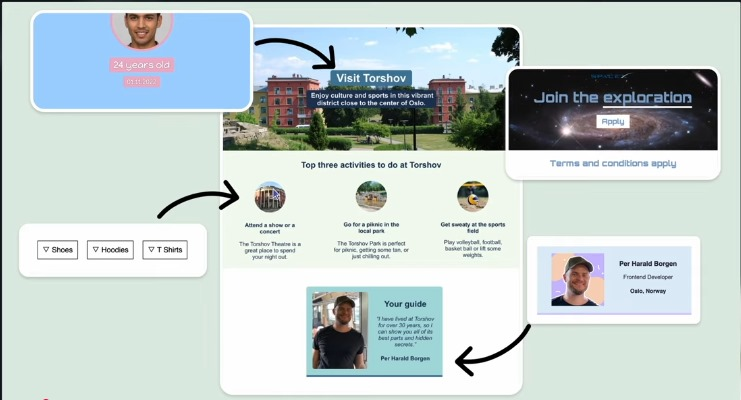

Uttar Pradesh is a vibrant state in northern India, renowned for its magnificent monuments, spiritual heritage, and rich cultural traditions spanning thousands of years.

The Taj Mahal is an iconic symbol of eternal love and one of the Seven Wonders of the World. Built by Emperor Shah Jahan in memory of his beloved wife Mumtaz Mahal.
One of the world's oldest continuously inhabited cities, Varanasi is the spiritual capital of India. Experience the mesmerizing Ganga Aarti at the ghats.
The capital city of Uttar Pradesh, Lucknow is famous for its exquisite Mughlai cuisine, elegant Nawabi culture, and architectural marvels like Bara Imambar.
Abhishek is a passionate traveler and cultural enthusiast who loves exploring India's rich heritage. Through his detailed guides and insider tips.